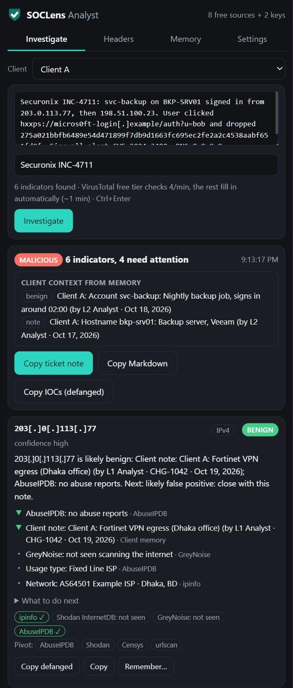
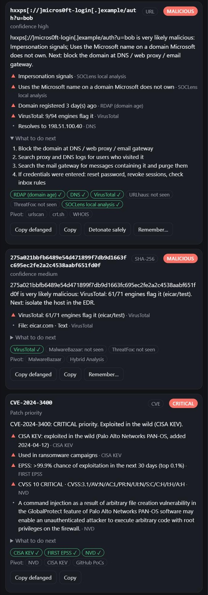
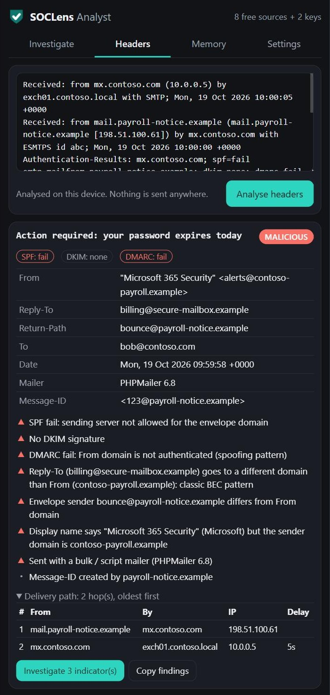
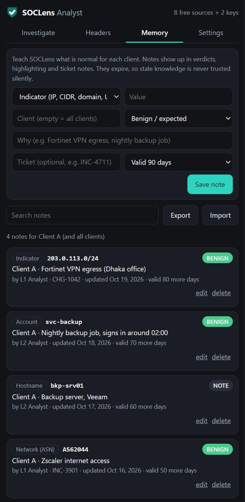

Investigate any IOC in one right-click.
SOCLens is a free browser extension for SOC analysts. Select an IP, domain, URL, file hash or CVE on any page, in Securonix, SentinelOne, HaloPSA or a raw log, and get an explainable verdict from 15 threat-intel sources, with what to do next and a ready ticket note.

Built for L1 and L2 analysts
Less tab-hopping and copy-pasting: the checks an analyst does by hand for every alert, in one place.
Right-click → Investigate
Paste or select anything, even a whole alert or defanged log line. Every indicator gets a verdict, a confidence level, plain-English reasons and next steps.
Explainable verdicts
Every verdict shows which source said what (VirusTotal, AbuseIPDB, GreyNoise, CISA KEV…). It recognises Tor exits, lookalike domains, new registrations and known infrastructure.
One-click ticket notes
A formatted note for HaloPSA or any ticketing tool, with verdicts, findings, recommended actions and defanged indicators, in HTML, plain text or Markdown.
Email header analysis
Paste headers to see SPF, DKIM and DMARC, delivery path and hop delays, the originating IP, and Reply-To and display-name tricks (BEC patterns). Fully on the device.
Client memory for MSSPs
Remember what is normal per client: VPN ranges, ASNs, countries, service accounts, hostnames. Notes expire, so stale knowledge is never trusted silently.
SentinelOne import
Import Threats, Endpoints or Data Lake exports. Triaged hashes and endpoint inventory become client notes, and internal IPs map to hostnames.
IOC highlighting
Indicators on SOC consoles are underlined by client memory and past verdicts. Click one for a verdict. The console's page is never modified.
Safe detonation
See a screenshot of a suspicious link through urlscan.io without opening it in your browser.
Phishing protection
Blocks fake login pages and lookalike domains, flags phishing emails in Gmail and Outlook on the web, and stops your work password being typed on other sites.
See it in action
Screenshots use sample data (documentation IP ranges, demo domains, the EICAR test file, public CVE data).



15 intel sources, your keys, your browser
Only the indicator is sent, directly from your browser to each service. There's no SOCLens server in between.
| Needs no key | Free API key |
|---|---|
| GreyNoise · Shodan InternetDB · ipinfo · RDAP domain age · DNS · CISA KEV · FIRST EPSS · NVD · local lookalike & brand analysis | VirusTotal (free tier queued automatically) · AbuseIPDB · abuse.ch: URLhaus, ThreatFox, MalwareBazaar · urlscan.io |
Install in one minute
- Download
soclens-extension-v*.zipfrom the latest release and unzip it. - Open
chrome://extensions(oredge://extensions), turn on Developer mode, click Load unpacked and pick the unzipped folder. - Select any indicator on a page, right-click, then SOCLens: Investigate. Optional: add free VirusTotal and AbuseIPDB keys in the panel's 2-minute setup.
FAQ
Is SOCLens free?
Yes, free and open source under Apache 2.0. Eight intel sources work with no key; VirusTotal, AbuseIPDB, abuse.ch and urlscan.io need a free key from each provider.
Does it send my data anywhere?
No SOCLens server is involved. Everything runs in your browser. When you investigate, only the indicator goes to each intel service. Email content, passwords and browsing history never leave the device. See the privacy policy.
Does it work with Securonix, SentinelOne or HaloPSA?
Yes. Investigate any text you select in those consoles, highlight the indicators on them, paste ticket notes into HaloPSA with formatting kept, and import SentinelOne CSV exports into client memory.
Can my company deploy it centrally?
Yes. Settings can be pushed through Chrome or Edge policy (GPO / Intune). An optional self-hosted console adds SOC reporting, threat feeds and sign-in verification.
Which browsers are supported?
Google Chrome and Microsoft Edge, version 116 or later.